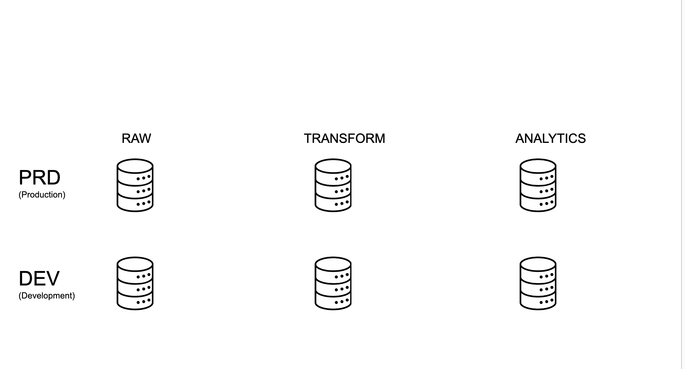
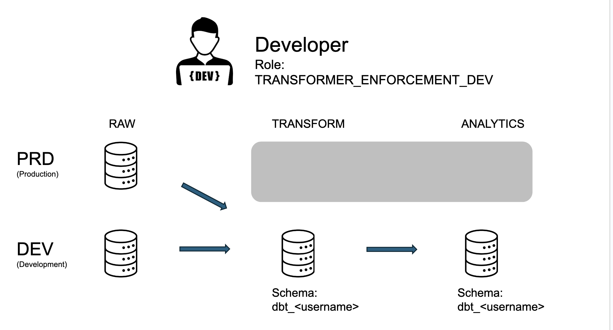
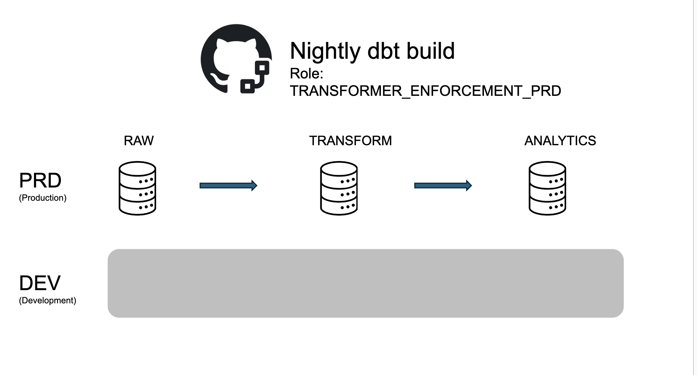
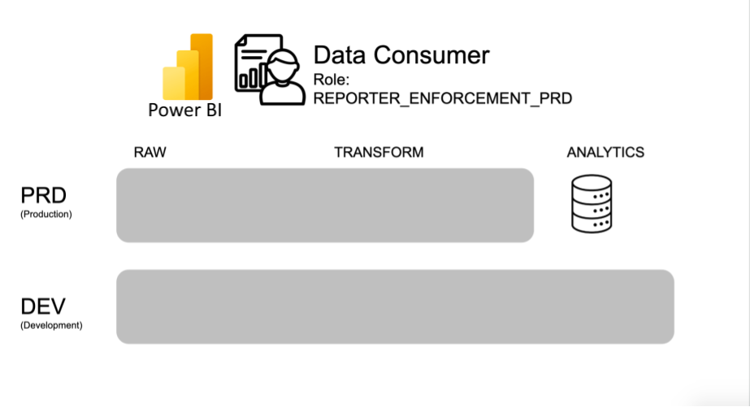

Project architecture¶
This project is organized around centralizing data in a Snowflake cloud data warehouse. Heterogeneous data sources are loaded into raw databases using custom Python scripts. These datasets are then transformed into analysis-ready marts using dbt.
We follow an adapted version of the project architecture described in this dbt blog post for our Snowflake dbt project.
It is described in some detail in ODI CalData's Snowflake docs as well.
flowchart TB
subgraph External Data Source
G[(Geo Data)]
CT[(\nCHP)]
TR[(\nTransit)]
end
subgraph Caltrans VPN
direction TB
PQ[(\nDistrict TMC Servers)]
C[(\nOther Data Source)]
end
PY>Python Scripts]
LS>Landing Server]
RS>Relay Server]
subgraph AWS
direction TB
A[\AWS S3 Bucket/]
subgraph Caltrans Snowflake
subgraph prod environment
direction TB
RP[(RAW_PRD)]
TP[(TRANSFORM_PRD)]
AP[(ANALYTICS_PRD)]
end
subgraph dev environment
direction TB
RD[(RAW_DEV)]
TD[(TRANSFORM_DEV)]
AD[(ANALYTICS_DEV)]
end
end
end
P{{PowerBI}}
Pe{{PeMS}}
RS -- LOADER_PRD --> A
A -- Data Pipelines --> RP
LS --> RS
CT --> LS
TR --> LS
RD -- TRANSFORMER_DEV --> TD
TD -- TRANSFORMER_DEV --> AD
RP -- TRANSFORMER_PRD --> TP
TP -- TRANSFORMER_PRD --> AP
RP -- TRANSFORMER_DEV --> TD
AD -- REPORTER_DEV --> P & Pe
AP -- REPORTER_PRD --> P & Pe
AP --> A
C --> LS
PQ --> LS
G --> PY
PY -- LOADER_PRD --> RP
PY -- LOADER_DEV --> RDSnowflake architecture¶
There are two environments set up for this project, development and production.
Resources in the development environment are suffixed with DEV,
and resources in the production environment are suffixed with PRD.
Most of the time, developers will be working in the development environment.
Once your feature branches are merged to main, they will be used in the production environment.
What follows is a brief description of the most important Snowflake resources in the dev and production environments and how developers are likely to interact with them.
Six databases¶
We have six primary databases in our project:
Where our Source data lives
RAW_DEV: Dev space for loading new source data.RAW_PRD: Landing database for production source data.
Where data from our Staging and Intermediate models lives
TRANSFORM_DEV: Dev space for staging/intermediate models. This is where most of your dbt work is!TRANSFORM_PRD: Prod space for models. This is what builds in the nightly job.
Where data from our Marts models lives
ANALYTICS_DEV: Dev space for mart models. Use this when developing a model for a new dashboard or report!ANALYTICS_PRD: Prod space for mart models. Point production dashboards and reports to this database.
Six warehouse groups¶
There are six warehouse groups for processing data in the databases,
corresponding to the primary purposes of the above databases.
They are available in a few different sizes, depending upon the needs of the the data processing job,
X-small (denoted by (XS), X-Large (denoted by (XL), and 4X-Large (denoted by 4XL).
Most jobs on small data should use the relevant X-small warehouse.
LOADING_{size}_DEV: This warehouse is for loading data toRAW_DEV. It is used for testing new data loading scripts.TRANSFORMING_{size}_DEV: This warehouse is for transforming data inTRANSFORM_DEVandANALYTICS_DEV. Most dbt developers will use this warehouse for daily work.REPORTING_{size}_DEV: This warehouse is for testing dashboards.LOADING_{size}_PRD: This warehouse is for loading data toRAW_PRD. It is used for production data loading scripts.TRANSFORMING_{size}_PRD: This warehouse is for transforming data inTRANSFORM_PRDandANALYTICS_PRD. This warehouse is used for the nightly builds.REPORTING_{size}_PRD: This warehouse is for production dashboards.
Six roles¶
There are six primary functional roles:
LOADER_DEV: Dev role for loading data to theRAW_DEVdatabase. This is assumed when developing new data loading scripts.-
LOADER_PRD: Prod role for loading data to theRAW_PRDdatabase. This is assumed by data loading scripts. -
TRANSFORMER_DEV: Dev role for transforming data. This is you! Models built with this role get written to theTRANSFORM_DEVorANALYTICS_DEVdatabases. CI robots also use this role to run checks and tests on PRs before they are merged to main. -
TRANSFORMER_PRD: Prod role for transforming data. This is assumed by the nightly build job and writes data to theTRANSFORM_PRDorANALYTICS_PRDdatabases. -
REPORTER_DEV: Dev role for reading marts. Use this when developing new dashboards. This role can read models in theANALYTICS_DEVdatabase. REPORTER_PRD: Prod role for reading marts. This is for users and service accounts using production dashboards. This role can read models in theANALYTICS_PRDdatabase.
Reporting and analysis¶
The most prominent consumer of the data products from this project are PowerBI and ArcGis dashboards, the PeMS Server, public users (researchers, private sector, and other public agencies).
Custom schema names¶
dbt's default method for generating custom schema names works well for a single-database setup:
- It allows development work to occur in a separate schema from production models.
- It allows analytics engineers to develop side-by-side without stepping on each others toes.
A downside of the default is that production models all get a prefix, which may not be an ideal naming convention for end-users.
Because our architecture separates development and production databases,
and has strict permissions protecting the RAW_PRD database,
there is less danger of breaking production models.
So we use our own custom schema name modified from the
approach of the GitLab Data Team.
In production, each schema is just the custom schema name without any prefix.
In non-production environments, dbt developers use their own custom schema based on their name: dbt_username.
Developing against production data¶
Our Snowflake architecture allows for reasonably safe SELECTing
from the production RAW_PRD database while developing models.
While this could be expensive for large tables,
it also allows for faster and more reliable model development.
To develop against raw production data, first you need someone with the USERADMIN role
to grant rights to the TRANSFORMER_DEV role
(this need only be done once, and can be revoked later):
USE ROLE USERADMIN;
GRANT ROLE RAW_PRD_READ TO ROLE TRANSFORMER_DEV;
Examples¶
User personae¶
To make the preceding more concrete, let's consider the six databases,
RAW, TRANSFORM, and ANALYTICS, for both DEV and PRD:

If you are a developer, you are doing most of your work in TRANSFORM_DEV
and ANALYTICS_DEV, assuming the role TRANSFORMER_DEV.
However, you also have the ability to select the production data from RAW_PRD for your development.
So your data access looks like the following:

Now let's consider the nigthly production build. This service account builds the production models
in TRANSFORM_PRD and ANALYTICS_PRD based on the raw data in RAW_PRD.
The development environment effectively doesn't exist to this account, and data access looks like the following:

Finally, let's consider an external consumer of a mart from PowerBI.
This user has no access to any of the raw or intermediate models (which might contain sensitive data!).
To them, the whole rest of the architecture doesn't exist, and they can only see the marts in ANALYTICS_PRD:

Scenario: adding a new data source¶
- Write a new Python script (or configure an equivalent loading tool) for loading the data to Snowflake.
- Assume the
LOADER_DEVrole and load the data into theRAW_DEVdatabase. - Verify that the data was loaded and looks correct in Snowflake.
- Schedule the Python script to run using the
LOADER_PRDrole and theRAW_PRDdatabase. This data are now ready for dbt modeling. - Once the data is loaded to the
RAW_PRDdatabase, drop the data from theRAW_DEVdatabase, it’s not needed anymore.
Scenario: creating a new dashboard¶
- Create a branch and develop your new marts table (or modify an existing one) in
ANALYTICS_DEVusing your normalTRANSFORMER_DEVrole. - Assume the
REPORTER_DEVrole with PowerBI and point it to your mart inANALYTICS_DEV. - Once you are happy with your mart and dashboard, merge your branch to main.
- Once the nightly job is done, your new mart will be built in
ANALYTICS_PRD. - Assume the
REPORTER_PRDrole and point your PowerBI dashboard to the production mart.